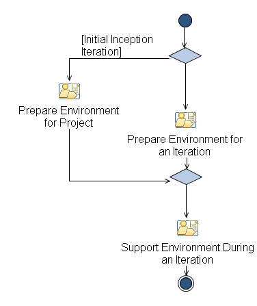

Capability Pattern: Environment
This capability pattern covers the activities and workflow for the Environment discipline.
Description
Work Breakdown Structure
Team Allocation
Work Product Usage
Workflow

Work Breakdown
Licensed Materials - Property of IBM
© Copyright IBM Corp. 1987, 2014. All Rights Reserved.